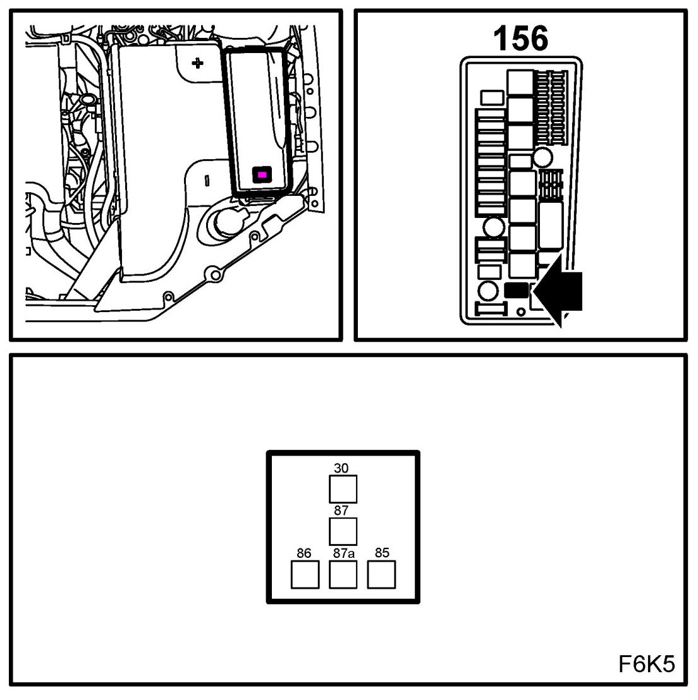
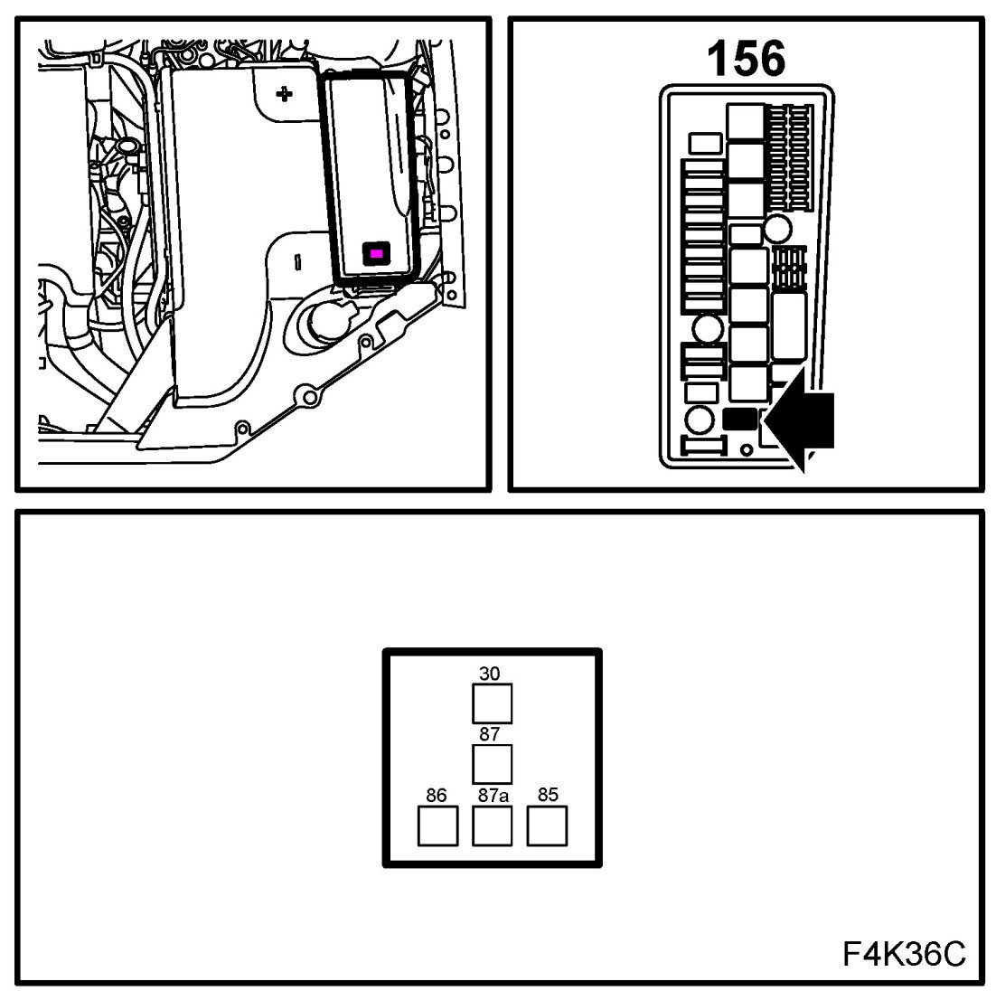
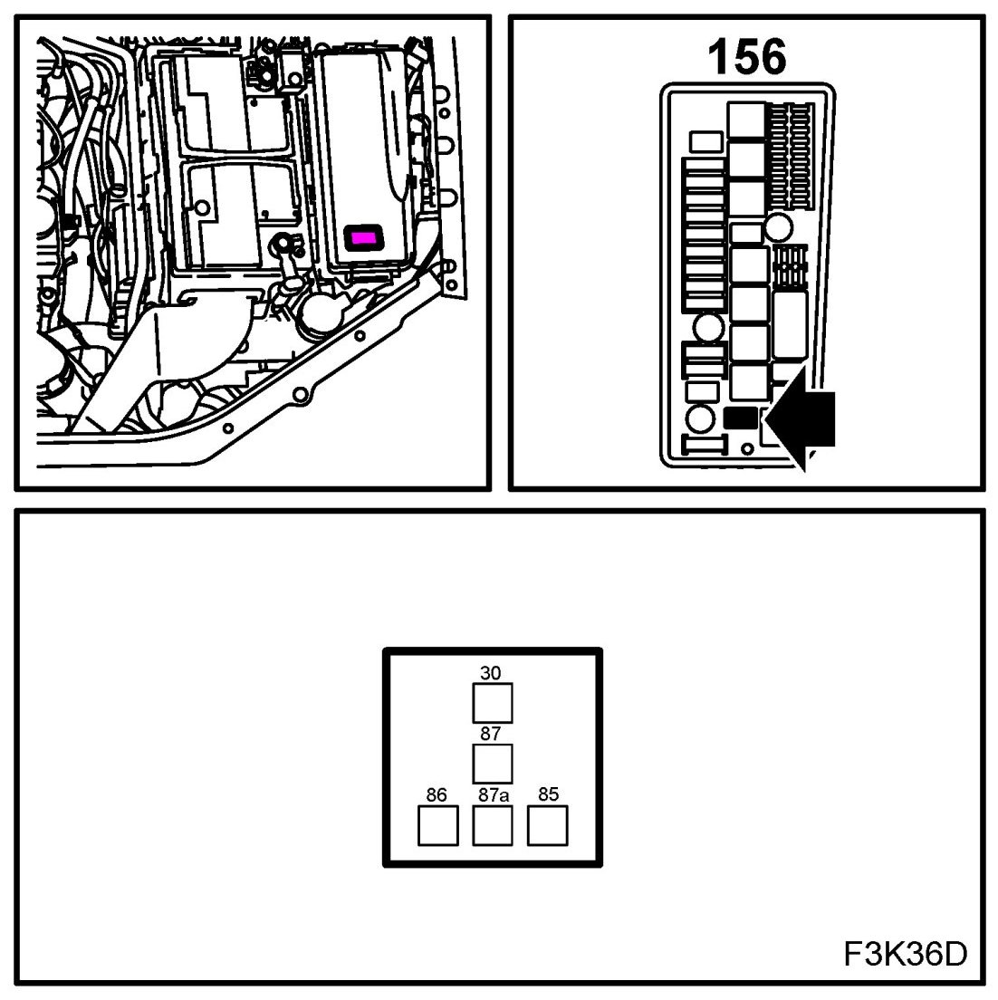

Compressor Clutch Relay: Locations
A/C Compressor Relay (156)
Location:
B207/B284
in the electrical centre in front of the battery

Z18XE
in electrical centre engine bay 342

Z19
in electrical centre engine bay 342
